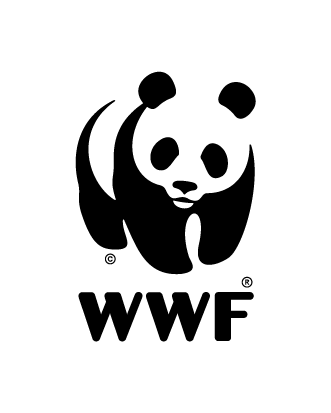
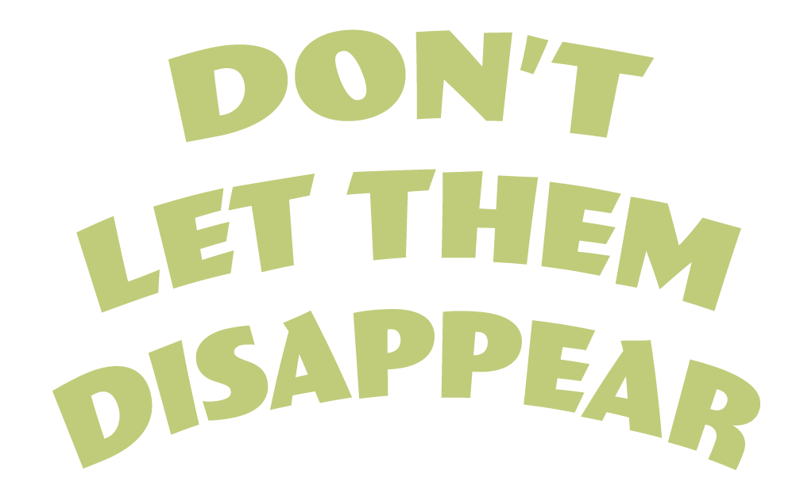
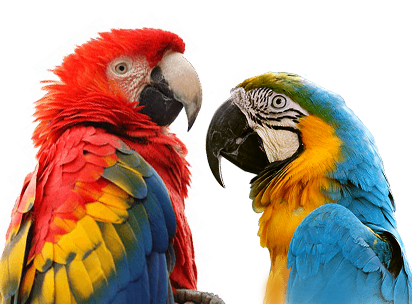

Humanity is an inextricable part of the rich tapestry of life that makes up our world’s biological diversity. All human civilizations have been and continue to be built on the use of wild and cultivated species of flora and fauna, from the food we eat to the air we breathe.
About
On 20 December 2013, at its 68th session, the United Nations General Assembly (UNGA) proclaimed 3 March – the day of signature of the Convention on International Trade in Endangered Species of Wild Fauna and Flora (CITES) in 1973 – as UN World Wildlife Day to celebrate and raise awareness of the world’s wild animals and plants. The UNGA resolution also designated the CITES Secretariat as the facilitator for the global observance of this special day for wildlife on the UN calendar. World Wildlife Day has now become the most important global annual event dedicated to wildlife.

António Guterres
Secretary-General United Nations
Ivonne Higuero
Secretary-General CITES Secretariat

We are extremely fortunate to count on the presence of an endless diversity of wild animals, plants, and other lifeforms that together make up life on our planet.
Events
Partners


